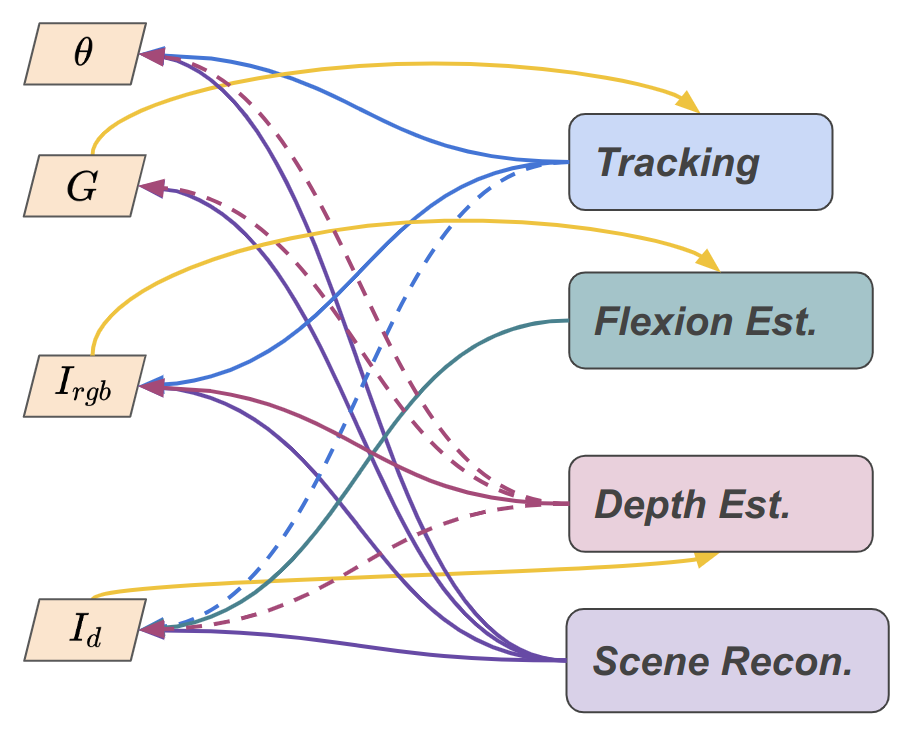

We use Dependency Graph to connect components to avoid redundancy.

Where four building blocks are involved in the current factory, (1) Mono-SLAM (Our extended-DPVO, supports RGB, RGB-D, RGB-L), (2) depth estimation (Our U2-MVD), (3) Flexion and (4) scene reconstruction (Our DM-NPs).